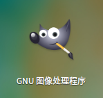

<!DOCTYPE html>
<html lang class="loading">
<head><meta name="generator" content="Hexo 3.8.0">
    <meta charset="UTF-8">
    <meta http-equiv="X-UA-Compatible" content="IE=edge,chrome=1">
    <meta name="viewport" content="width=device-width, minimum-scale=1.0, maximum-scale=1.0, user-scalable=no">
    <title>Linux图形界面软件推荐,不单实用还好看 - Linco</title>
    <meta name="apple-mobile-web-app-capable" content="yes">
    <meta name="apple-mobile-web-app-status-bar-style" content="black-translucent">
    <meta name="google" content="notranslate">
    <meta name="keywords" content="Linco, Blog,"> 
    <meta name="description" content="以下是我在Linux精心收集自用的软件, 基本涵盖了操作电脑的所需功能. 用上这些软件后, 可能你和我一样再回不到windows了..
​    
Linux 首推深度公司的 deepin os, ,"> 
    <meta name="author" content="Linco"> 
    <link rel="alternative" href="atom.xml" title="Linco" type="application/atom+xml"> 
    <link rel="icon" href="/img/icon.png"> 
    <link rel="stylesheet" href="//cdn.jsdelivr.net/npm/gitalk@1/dist/gitalk.css">
    <link rel="stylesheet" href="/css/diaspora.css">

</head>
</html>
<body class="loading">
    <span id="config-title" style="display:none">Linco</span>
    <div id="loader"></div>
    <div id="single">
    <div id="top" style="display: block;">
    <div class="bar" style="width: 0;"></div>
    <a class="icon-home image-icon" href="javascript:;" data-url></a>
    <div title="播放/暂停" class="icon-play"></div>
    <h3 class="subtitle">Linux图形界面软件推荐,不单实用还好看</h3>
    <div class="social">
        <!--<div class="like-icon">-->
            <!--<a href="javascript:;" class="likeThis active"><span class="icon-like"></span><span class="count">76</span></a>-->
        <!--</div>-->
        <div>
            <div class="share">
                <a title="获取二维码" class="icon-scan" href="javascript:;"></a>
            </div>
            <div id="qr"></div>
        </div>
    </div>
    <div class="scrollbar"></div>
</div>

    <div class="section">
        <div class="article">
    <div class="main">
        <h1 class="title">Linux图形界面软件推荐,不单实用还好看</h1>
        <div class="stuff">
            <span>五月 14, 2019</span>
            
  <ul class="post-tags-list"><li class="post-tags-list-item"><a class="post-tags-list-link" href="/tags/Linux/">Linux</a></li><li class="post-tags-list-item"><a class="post-tags-list-link" href="/tags/碎碎念/">碎碎念</a></li></ul>


        </div>
        <div class="content markdown">
            <p>以下是我在Linux精心收集自用的软件, 基本涵盖了操作电脑的所需功能. 用上这些软件后, 可能你和我一样再回不到windows了..</p>
<p>​    </p>
<p>Linux 首推深度公司的 deepin os, 基于Debian内核, 与Ubuntn一致. Ubuntu下的参考资料基本适用于deepin, 所以使用deepin在第三方资料上不吃亏. 我大概四年前第一次使用 deepin, 那时的系统很不成熟, 早早弃坑了. 再回到deepin是大概一年前, 归来已不再少年. 原本不完善的功能都得到解决, Deepin已经成为国内最优秀的 Linux 桌面系统</p>
<p></p>
<p></p>
<p>​    </p>
<p>好了, 下面才是正题</p>
<p>​    </p>
<h4 id="办公套件"><a href="#办公套件" class="headerlink" title="办公套件"></a>办公套件</h4><p></p>
<p><a href="https://www.wps.cn/product/wpslinux" target="_blank" rel="noopener">这里下载</a></p>
<p>金山公司的WPS套装, 因为MS Office授权原因很多人在Win平台也用着, 实际体验还好, 不及Office但是免费</p>
<p>​    </p>
<p>Office没有Linux版本, 其他类似功能的软件连半成品都称不上, WPS算猴子称王吧</p>
<p>​    </p>
<p>WPS 排版和 Office 一般是兼容的, 如果好好的文档在 Linux 的word 打开混乱了, 很可能是文档用到了Linux 系统未安装的字体导致用默认的字体显示, 排版改变 – 你想的没错, 一般就是微软雅黑, 下载个字库装上  <a href="/">现在就去</a></p>
<p>​    </p>
<p>WPS 的 PowerPoint 高级动效和Office兼容很差, 不是迫不得已不建议在wps制作含有大量动画效果的ppt</p>
<p>​    </p>
<p>以及, 这货广告真的多</p>
<p>​    </p>
<h4 id="浏览器"><a href="#浏览器" class="headerlink" title="浏览器"></a>浏览器</h4><p>Chrome 或 Firefox, 不用多说, 看个人喜好 </p>
<p><a href="https://www.google.cn/chrome/" target="_blank" rel="noopener">这里下载</a></p>
<p>​    </p>
<h4 id="QQ-微信"><a href="#QQ-微信" class="headerlink" title="QQ 微信"></a>QQ 微信</h4><p>推荐在Deepin应用商店下载新版的TIM, TIM就是鹅厂自己把有用的功能加强了, 把没用功能去掉了的QQ. … 遗憾的是Deepin商城全版本的TIM和QQ都依赖 Deepin的dde环境和 wine环境, Deepin用户可以直接使用, 其他linux发行版本难以配置, 建议搭载 <a href="https://lincoxiaoq.github.io/2019/05/16/%E5%8F%AF%E8%83%BD%E6%98%AFLinux%E4%B8%8B%E9%80%9A%E8%BF%87wine%E8%BF%90%E8%A1%8CWindows%E5%B0%8F%E5%9E%8B%E8%BD%AF%E4%BB%B6%E6%9C%80%E7%AE%80%E5%8D%95%E7%9A%84%E6%96%B9%E6%B3%95/" target="_blank" rel="noopener">wine</a> 后安装windows版本</p>
<p>​    </p>
<p>微信的话, 在Deepin桌面环境同样首选应用商店的版本. 如果是其他系统, 使用各种开源的web移植版本是不错的选择, 缺点是功能缺失. 需要完整版微信客户端的话, 只能和QQ一样搭载 <a href="https://lincoxiaoq.github.io/2019/05/16/%E5%8F%AF%E8%83%BD%E6%98%AFLinux%E4%B8%8B%E9%80%9A%E8%BF%87wine%E8%BF%90%E8%A1%8CWindows%E5%B0%8F%E5%9E%8B%E8%BD%AF%E4%BB%B6%E6%9C%80%E7%AE%80%E5%8D%95%E7%9A%84%E6%96%B9%E6%B3%95/" target="_blank" rel="noopener">wine</a> </p>
<p>​    </p>
<p>开源的 <strong>electronic-wechat</strong> 在<a href="https://github.com/geeeeeeeeek/electronic-wechat" target="_blank" rel="noopener">这里下载</a></p>
<p>​    </p>
<h4 id="音乐"><a href="#音乐" class="headerlink" title="音乐"></a>音乐</h4><p>首推网易云</p>
<p></p>
<p>​    </p>
<p>网易与deepin合作开发的版本, 不大确定其他平台是否兼容</p>
<p><a href="http://cdimage.deepin.com/applications/netease-cloud-music" target="_blank" rel="noopener">这里下载</a></p>
<p>​    </p>
<h4 id="输入法"><a href="#输入法" class="headerlink" title="输入法"></a>输入法</h4><p>搜狗输入法, 各大热门输入法平台唯一做了linux版本的, 无广告, 业界良心吧, 遗憾的是设置选项有点少</p>
<p><a href="https://pinyin.sogou.com/linux/" target="_blank" rel="noopener">这里下载</a></p>
<p>​    </p>
<h4 id="硬盘管理"><a href="#硬盘管理" class="headerlink" title="硬盘管理"></a>硬盘管理</h4><p>硬盘分区, 调整大小, 格式化, 控制分区的挂载等等, 基本就是 DiskGenius 的主要功能加上自动挂载管理</p>
<p>​    </p>
<p>自动挂载管理是个好东西, Deepin会自动挂载硬盘的所有可用分区, 但我们通常只是需要系统读写运行所需的分区和数据分区, 其他区域应该被保护, 也不宜在文件管理器中呈现</p>
<p></p>
<figure class="highlight plain"><table><tr><td class="gutter"><pre><span class="line">1</span><br></pre></td><td class="code"><pre><span class="line">sudo apt-get install gnome-disk</span><br></pre></td></tr></table></figure>
<p>​    </p>
<p>如果是Centos等, 使用 yum search; yum install, 不用多说</p>
<h4 id="图像处理"><a href="#图像处理" class="headerlink" title="图像处理"></a>图像处理</h4><p>Linux 没有Photoshop, 我找到最好的代替品是这款gimp图像处理工具</p>
<p></p>
<p>​    </p>
<p>使用体验比PS差的不是一点半点, 但确实能实现不算简单的图像处理功能, 这已经是其他同类软件望尘莫及的了</p>
<p></p>
<figure class="highlight plain"><table><tr><td class="gutter"><pre><span class="line">1</span><br></pre></td><td class="code"><pre><span class="line">sudo apt-get install gimp</span><br></pre></td></tr></table></figure>
<p>​    </p>
<h4 id="文件管理"><a href="#文件管理" class="headerlink" title="文件管理"></a>文件管理</h4><p>如果系统自带的文件管理不够满足需要, 可以试试 Nautilus, 这款第三方的文件管理器提供了美观的界面, 高效的操作模式并且支持广泛的网络文件共享协议</p>
<p></p>
<p>​    </p>
<p>这款文件管理程序有两个严重的缺陷: </p>
<p>​    标题栏路径不支持手动输入–要知道手动输入路径 (实际上是CtrlV) 是开发人员常用的访问方式</p>
<p>​    右键菜单没有在此处打开终端功能–败笔</p>
<p>​    </p>
<p>所以 Nautilus 并不适合作为默认的文件夹打开方式, 它安装后会设置默认, 找个文件夹右键打开方式, 切换回原来的吧</p>
<p>​    </p>
<h4 id="手机管理"><a href="#手机管理" class="headerlink" title="手机管理"></a>手机管理</h4><figure class="highlight plain"><table><tr><td class="gutter"><pre><span class="line">1</span><br><span class="line">2</span><br></pre></td><td class="code"><pre><span class="line">sudo apt-get install adb</span><br><span class="line">sudo apt-get install fastboot</span><br></pre></td></tr></table></figure>
<p>命令控制, 刷机什么的, Linux连接安卓手机基本不用驱动, 没有刷机工具, 自己敲命令吧</p>
<p>​    </p>
<h4 id="粘贴板管理"><a href="#粘贴板管理" class="headerlink" title="粘贴板管理"></a>粘贴板管理</h4><p>可以保存多项记录的粘贴板是提升工作效率的神器, CopyQ算是神器中的神器, 谁用谁知道</p>
<p></p>
<figure class="highlight plain"><table><tr><td class="gutter"><pre><span class="line">1</span><br></pre></td><td class="code"><pre><span class="line">sudo apt-get install copyq</span><br></pre></td></tr></table></figure>

            <!--[if lt IE 9]><script>document.createElement('audio');</script><![endif]-->
            <audio id="audio" loop="1" preload="auto" controls="controls" data-autoplay="true">
                <source type="audio/mpeg" src="/music/最佳损友 纯音乐.mp3">
            </audio>
            
        </div>
        
    <div id="gitalk-container" class="comment link" data-ae="false" data-ci="978518cc439cd352dd0b" data-cs="2d89825e7db6df72d065714d6b4ac1ce1829b14e" data-r="LincoXiaoQ.github.io" data-o="LincoXiaoQ" data-a="LincoXiaoQ" data-d="false">查看评论</div>


    </div>
    
</div>


    </div>
</div>
</body>
<script src="//cdn.jsdelivr.net/npm/gitalk@1/dist/gitalk.min.js"></script>
<script src="//lib.baomitu.com/jquery/1.8.3/jquery.min.js"></script>
<script src="/js/plugin.js"></script>
<script src="/js/diaspora.js"></script>
<link rel="stylesheet" href="/photoswipe/photoswipe.css">
<link rel="stylesheet" href="/photoswipe/default-skin/default-skin.css">
<script src="/photoswipe/photoswipe.min.js"></script>
<script src="/photoswipe/photoswipe-ui-default.min.js"></script>

<!-- Root element of PhotoSwipe. Must have class pswp. -->
<div class="pswp" tabindex="-1" role="dialog" aria-hidden="true">
    <!-- Background of PhotoSwipe. 
         It's a separate element as animating opacity is faster than rgba(). -->
    <div class="pswp__bg"></div>
    <!-- Slides wrapper with overflow:hidden. -->
    <div class="pswp__scroll-wrap">
        <!-- Container that holds slides. 
            PhotoSwipe keeps only 3 of them in the DOM to save memory.
            Don't modify these 3 pswp__item elements, data is added later on. -->
        <div class="pswp__container">
            <div class="pswp__item"></div>
            <div class="pswp__item"></div>
            <div class="pswp__item"></div>
        </div>
        <!-- Default (PhotoSwipeUI_Default) interface on top of sliding area. Can be changed. -->
        <div class="pswp__ui pswp__ui--hidden">
            <div class="pswp__top-bar">
                <!--  Controls are self-explanatory. Order can be changed. -->
                <div class="pswp__counter"></div>
                <button class="pswp__button pswp__button--close" title="Close (Esc)"></button>
                <button class="pswp__button pswp__button--share" title="Share"></button>
                <button class="pswp__button pswp__button--fs" title="Toggle fullscreen"></button>
                <button class="pswp__button pswp__button--zoom" title="Zoom in/out"></button>
                <!-- Preloader demo http://codepen.io/dimsemenov/pen/yyBWoR -->
                <!-- element will get class pswp__preloader--active when preloader is running -->
                <div class="pswp__preloader">
                    <div class="pswp__preloader__icn">
                      <div class="pswp__preloader__cut">
                        <div class="pswp__preloader__donut"></div>
                      </div>
                    </div>
                </div>
            </div>
            <div class="pswp__share-modal pswp__share-modal--hidden pswp__single-tap">
                <div class="pswp__share-tooltip"></div> 
            </div>
            <button class="pswp__button pswp__button--arrow--left" title="Previous (arrow left)">
            </button>
            <button class="pswp__button pswp__button--arrow--right" title="Next (arrow right)">
            </button>
            <div class="pswp__caption">
                <div class="pswp__caption__center"></div>
            </div>
        </div>
    </div>
</div>


</html>
